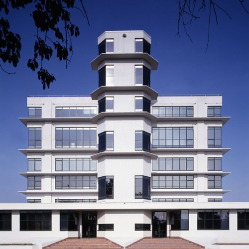
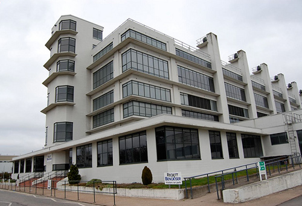
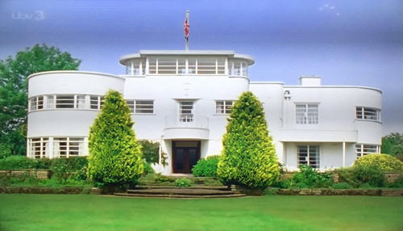
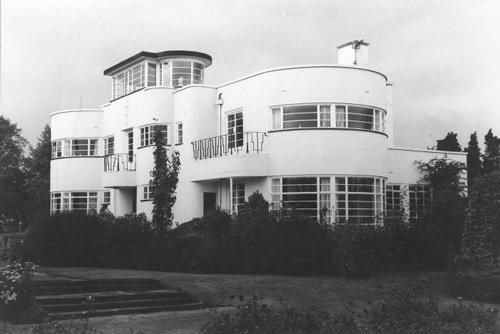
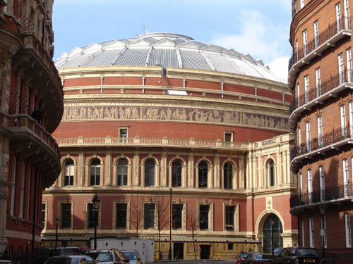
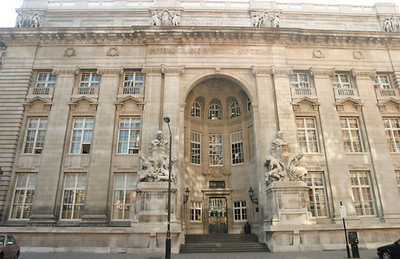

The Boots D6 Building at Beeston in Nottingham. D6, the dry processes factory (constructed 1937-38), was designed by Sir Evan Owen Williams. It is an outstanding example of reinforced concrete engineering, with unprecedented 9 metre cantilevers in the single-storey wings.

Boots D6 Building (side view).

The Uplands in Blythe Bridge, Staffordshire was used as the 'House of Sir Reuben Astwell'. Designed in 1937-38 by Alfred Glyn Sherwin, an architect based in Newcastle-under-Lyme between the 1930s and mid-1950s. He was responsible for some notable buildings in North Staffordshire including cinemas, public houses and at least one private residence (above and below).


The chase sequences take place near the Albert Hall.

The Royal School of Mines (Part of Imperial College) in South Kensington, London SW7 - designed by Sir Aston Webb.